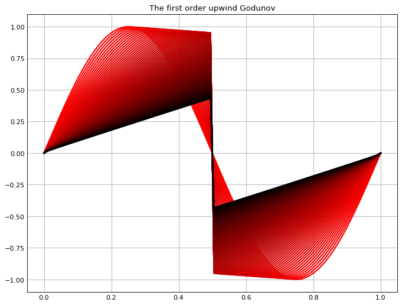

Oceanic models often comprise two components. The biological part is to describe ecological interaction in food webs locally, often within a single water pacel. The other part makes use of physical modeling of fluid dynamics, simulating how the focal biotic and abiotic organisms move with water by diffusion and sinking.
My project at Dept of Global Ecology of Carnegie Institute for Science at Stanford University is to use this type of oceanic models to look at the vertical profile of bacteria diversity formed by the ecological interaction and the vertical water transferring.
One techniqe used in this research is to simulate the water advection by numerically integrating the fluid dynamics. Thus, the accuracy of the numerical integration is important to correctly capture the patterns of the focal tracers.
Here in this post, I implemented several schemes to acheive the numerical integration. The code is adapted from the numerical methods for partial differential equations course from MIT.
The implemented code can be found here.
CLICK THE TITLE TO SEE MORE!
The list of the schemes implemented here
1. The central difference scheme;
2. The first order upwind scheme;
3. The first order upwind Godunov scheme;
4. The second order upwind Godunov scheme;
5. The second order upwind Godunov scheme with Van Leer limiter;
6. The third order (quadratic) upwind scheme (QUICK);
Schemes to be implemented:
The third order (quadratic) upwind Godunov scheme;
The piecewise parabolic methods (PPM) scheme;
etc.
The physical model used as the example
The Burgers equation is used to demonstrate the performance difference in the schemes
$$
\frac{\partial u}{\partial t} + u \frac{\partial u}{\partial x} = 0
$$
where $u$ is the concentration of the tracer and the sinking rate is related to the concentration.
The equation can be simplified as
$$
\frac{\partial u}{\partial t} + \frac{\partial f(u)}{\partial x} = 0
$$
where $f(u)=\frac{u^2}{2}$. This function can be customized to any function as you wish. For example, $f(u)=cu$ where c is the constant sinking rate.
The concentration along x-axis is initialized as a Sinc shape. As such, at the middle place, there is a shock wave generated due to the rightward moving wave colliding with the leftward moving wave. The performance of schemes differ significantly right here due to large curve gradients that ruin the smoothness of the curve.
The integration over space
The schemes implemented here are used to approximate the integration over space, i.e. the second term of the equation
$$
\frac{\partial f(u)}{\partial x}
$$
as it involves complex dynamics.
The integration over time can be done via ODE45/Rounge-Kutta methods directly.
The initial condition
The value of $u$ is initialized as a Sinc curve with both positives and negatives. Thus, the Burgers equation shows that the wave is moving rightward when $u>0$ and leftward when $u<0$. This is to illustrate the collision of the waves that produces the shock wave, i.e. the sharp slope at the collision point where normally low-order schemes easily failed.
The color of the waves indicates the time progress. The far left wave in fresh red is the initial shape. With the darkening color, the wave proceeds as the equation models. The black curve indicates the final time step of the wave.
The expected wave moving should be something like Fig. 5, a right Sinc-shape curve collapses to a Z shape due to physical dissipation. The amplitude of the curves should not decrease until moving to the shock point.
The central difference scheme
Fig. 1
The oscillations are generated due to low accuracy of the scheme at the shock wave.
The first order upwind scheme
Fig. 2
The oscillations have been improved because the upwind scheme takes the information from the coming wave. But artificial dissipation has been generated by this scheme, i.e. the magnitude of the wave decreases before the abrupt collapse – the shock wave.
The first order upwind Godunov scheme;
Fig. 3
With Godunov scheme, it performs similarly to the first order upwind scheme.
The second order upwind Godunov scheme
Fig. 4
Using second order improves the dissipation.
However, some slight oscillations are generated. So, we should go for a higher order scheme + Godunov.
The second order upwind Godunov scheme with Van Leer limiter
Fig. 5

This scheme with the Van Leer limiter has largely improved the dissipation and removed the oscillations.
QUICK scheme
Fig. 6

This scheme with the third order accuracy performs well even without implementing Godunov and the limiter!
A higher order scheme + Godunov + limiter should improve further.